This section describes the different features of the ImageViewer user interface.
The workbench is the main window of the ImageViewer. It serves as the container of the different views. Views can be resized by :
Moving the separators between views,
Maximized by double clicking on the title bar of view
Detached from the workbench by right clicking on the title bar and selected « Detached »
Clicking on the minimize or maximize buttons of a view
Reset the workbench to its default aspect by selecting « Edit -> Reset Perspective ». This will return the workbench to its original aspect with one window for the Image Navigator view. Use this option if you are confused about the layout or the windows that are currently open. It will restore the workbench to its original layout.
Select a directory containing images in one or more of the image file formats supported by Fabio.
Select one or more files in one or more image file formats supported by Fabio.
Windows in the ImageViewer are referred to as Views. A number of views are implemented. To access any of the views use the Window -> Show View menu to open the Show View selection box :
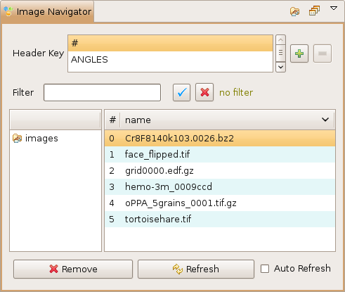
Displays the list of files for each directory. To filter the files to display type the text to filter the file names on and type Enter or click on the tick box. Only the files which contain the text in the filter and which have one of the suffixes listed in the Fabio File Preferences will be displayed. The number of files and the total number of files are displayed next to the filter. Click on the cross to clear the filter and display all files in the directory. To remove files from the navigator select the files to remove and click on Remove. To reread the directory to update the list of files displayed click on Refresh.
To automatically refresh the list of directories in a file every 10 seconds select the Auto Refresh button. This will start a job in the background to refresh the directory every 10 seconds and update the list of files (and apply the filter) displayed for the currently selected directory. This is useful for viewing files in a directory where new files can be created while viewing e.g. by a data collection or analysis process. If the last file in the list is selected the Navigator will always go to the last file in the list when Auto Refresh is selected. The Remove Files context menu is disabled when the Auto Refresh is enabled to avoid confusion.
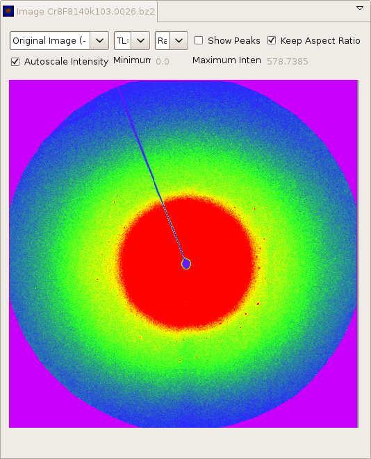
The Main Image view displays the selected image. To display a different image click on the new image name in the Image Navigator view table. (There are other ways to change the image file. See Changing the Viewed Image.) The cursor displays the current x,y position and the pixel value. For the TotalCrys standard detector coordinates, x in the view corresponds to TotalCrys y and y in the view corresponds to TotalCrys z if the coordinate origin is BR=(0,0) as described below. When in autoscale the image is scaled between (min and mean+1.5*(mean-min)). To manually scale an image deselect autoscale and set minimum and/or maximum and click on update.
The image can be viewed in 8 orientations. These orientations are associated with the TotalCrys o parameters (o11, o12, o21, o22). The o parameters that result in an image oriented as it would be looking at the detector in the direction of the beam are the o parameters to specify in other Fable software, such as ImageD11. The choices for the o parameters also have more commonplace descriptions, such as Flip H and V, for those that do not use the o parameters. For more information on o parameters see the Fable web site. You can set your preferred orientation as a Preference.
The coordinate origin can be selected as TL=(0,0) (typical image coordinates), TR=(0,0), BR=(0,0) (TotalCrys coordinates), BL=(0,0) (usual xy coordinate system), or Custom, as described below. (TL stands for top-left, etc., and the direction is chosen so the coordinates will be positive within the image.) The only place the coordinates appear is in the display of the mouse position. Note that the coordinate system and the image orientation may be specified independently. You can set your preferred coordinate system as a Preference, and you can also set the parameters for custom coordinates as a preference.
The displayed coordinates (x1, y1) are defined via the equations:
x1 = pixelWidth * (x - x0)
y2 = pixelWidth * (y - y0)
where (x, y) are the image coordinates with origin at top left. You can set
x0, y0, pixelWidth, and pixelHeight to define your own coordinate system with
the Custom option. You can also specify the names of the displayed coordinates,
for example, (yDet, zDet) instead of (x, y) as for the other choices. The custom
coordinates are fixed, and do not change if the image size or orientation changes,
as do the other choices.
You can select a color map using the color map combo box. The color map stretches between the maximum and minimum values described above. You can set your preferred color map as a preference. Changes to Preferences won't be seen until the next restart.
You can set the intensity to Autoscale or not. In Autoscale the colors between the minimum and the maximum in the file are scaled onto the color map. With Autoscale off, the colors between the minimum and the maximum specified are scaled onto the color map. Values below the minimum will have the lowest value in the color map and values above the maximum will have the highest value in the color map. If the maximum is set to less than the minimum, then all values below the minimum will have the lowest value and all values equal to or above the minimum will have the highest value. This feature can be used to check thresholds.
The maximum and minimum values are set by default to the maximum and minimum values in the file if Autoscale is on. Otherwise they are left alone. If you lose the maximum and minimum values in the file, you can use the Image Info item on the context or local view menus to see what they are.
You can choose Keep Aspect Ratio, in which case the image will be sized to fit in the display area so that it has the same aspect ratio as in the file. Otherwise the image will scale to fit the display area.
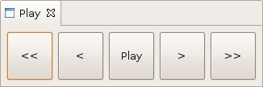
You can select the previous or next image by clicking on the button < and >. Clicking on the buttons >> and << will go to the last and first image in the current directory. Selecting the check box on the right will enable the Play mode. In this mode if you click on the forward or reverse buttons (> and < or >> and << for fast forward and reverse) the ImageViewer will step through the files continuously until you click on stop ||. You can detach the play view by right clicking on the view and selecting Detached. Place it at a convenient place on your screen. These buttons allow for easy keyboard navigation through images.
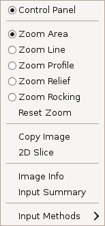
Click the right button mouse on the image to get the context menu to select the zoom mode, make a copy of an image, get info on the image etc.
Use the context menu to select a type of zoom. Then use the mouse to select the zoom area or line. The values will be displayed in the corresponding view e.g. Area, Line, Profile, Relief, RockingCurve. Peaks selects the size of the peaks to display when displaying peaks on an image.
Slices are 2D or 3D images made from a 1D or 2D selection taken through multiple images. To make a 2D slice you must select the images you want the slice to be taken through in the navigator, select a region of interest (line or area) and then click on the 2D button. Here is an example of a slice :
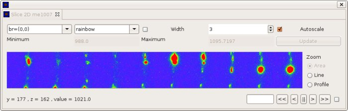
3D slices are not implemented yet. But you can get a 3d display of a slice using the Relief zoom :
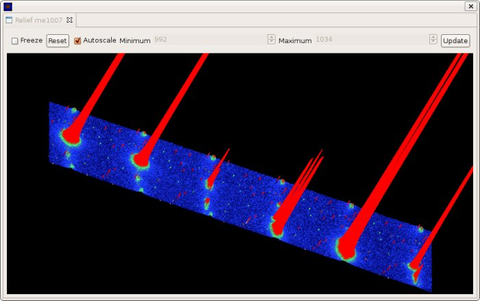
If you select Copy then a copy will be made of your image and displayed in a new window. Use this option if you need to keep a copy of an image displayed at the same time as you are looking at other images. You can also drag a selected file from the navigator to the copy to change the contents of the image copy.
You can display the difference between the current image and a reference image. Select Save to set the reference image, then select Difference to display the difference of the current image and the reference image. Unselect Difference to go back to displaying the current image.
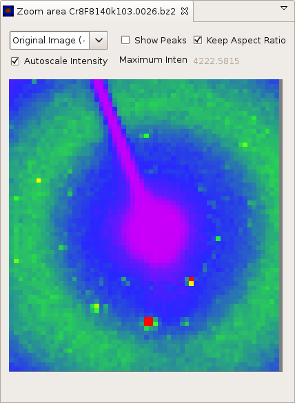
When zooming in on an area, either in the Main view or the Zoom view, the zoomed image will be displayed in the Zoom view. The Main Image view does not change its display area. If, however, you zoom in the Zoom view, then that view will change to reflect the new selected area. Thus, the full image is always shown in the Main view, and the zoomed image, in the Zoom view. There is only one Main view and one Zoom view.
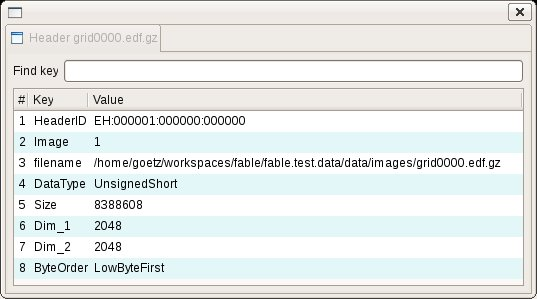
Displays the header values in a table for the selected file.
To plot header key values open the Header Plot view by selecting Window -> Show View -> Other -> ImageViewer -> Header Plot.
The Header plot view will be opened and you can select header key values to plot for example :
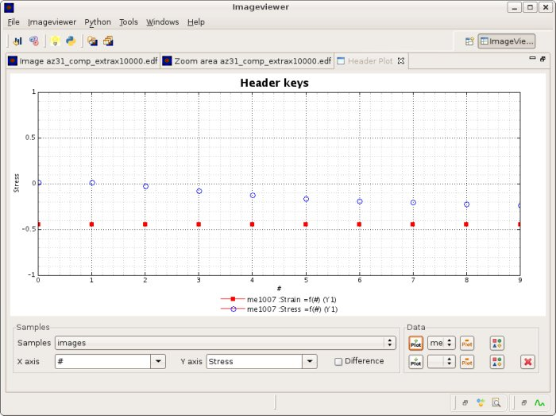
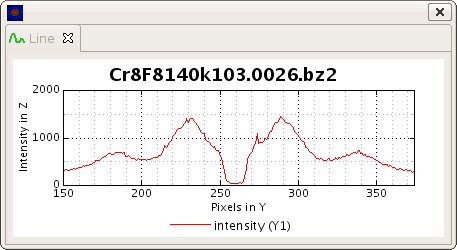
Line plot when zoom is set to Line.
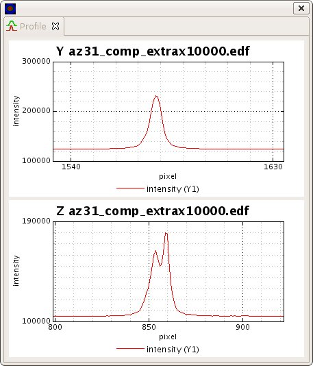
Profile in Y and Z when zoom is set to Profile.
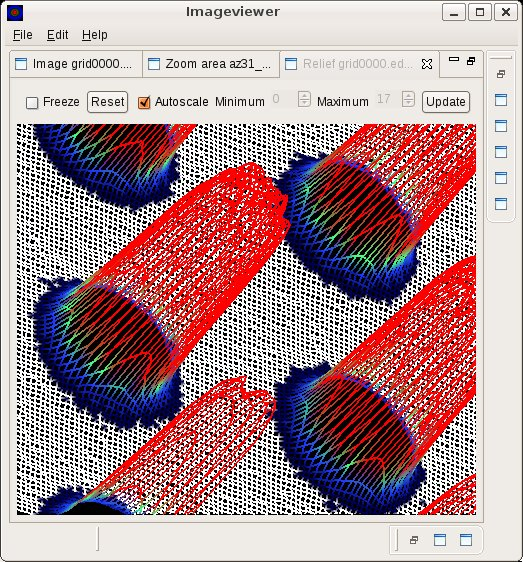
When zoom is set to Relief a 3D mesh of the selected area will be displayed. You use the mouse to rotate and move the relief plot.
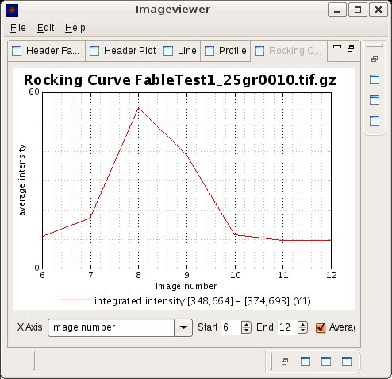
Rocking curve when zoom is set to rocking curve. You can select or display the average value of the rocking curve or the total intensity. If you change the range of the rocking curve by hand then click on the Update button.
There are a number of ways you can change which image is displayed. Some of these are:
Items 1-3 actually load the file into the Image Navigator or PeakSearch 2D Peaks view, and these views automatically display the first image. You can then select which of the files in these views are displayed from these views. When a file is selected in these views, the file is loaded into the Main Image view. Depending on whether the Main Image view has a selection or not and what is the mode of the selection (Area, Line, Profile, Relief, Rocking, see the Context Menu above) the corresponding view will also update. That is, if there is a selection and the mode was set to Area when it was made, then the Zoom view will update as well.
You can drag and drop into the Main and Zoom views. If you drag into the Main view, then the corresponding view will update in the same way as in the paragraph above. If you drag into the Zoom view, only that view will update.